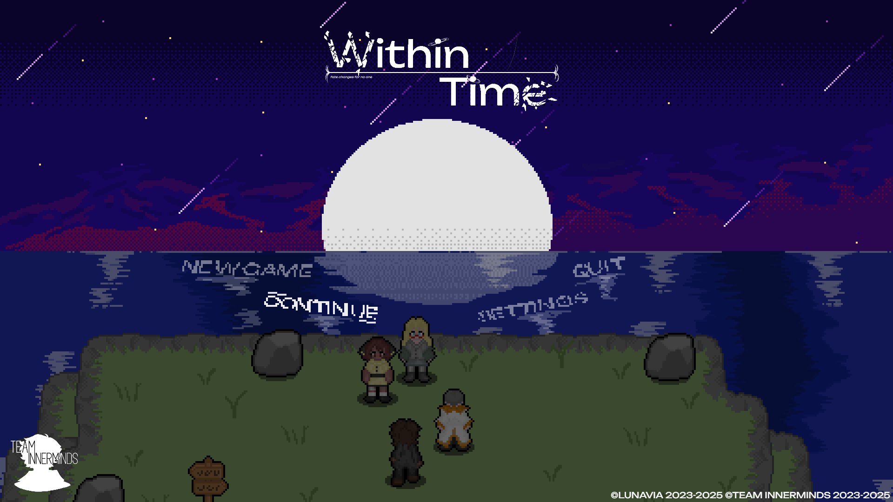

I'm Lunavia a 19 year-old game's developer and programmer from the UK. I am the founder of Team INNERMINDS, the studio behind Within Time. I also am a self-taught artist and musician, having practiced both arts for several years. These skills allowed me to start up my own game's studio as formerly mentioned.
About Me
Projects
- Within Time – A turn-based RPG taking place in the worlds of Terrus and Iolade. Following Yunis Caelum and his friends as they prevent the world from its end.(Page can be found publicly on Steam)
- Like a Butterfly – A visual novel following the life of Ana, a transgender woman and showcases the difficulties of her day to day life. (Development on Haitus)
- Reverberation – A tech-demo for a puzzle game featuring the use of clones, created in collaboration with Popedev. (Avaliable to view on Itch)
Within Time

FATE CHANGES FOR NO ONE. Your destiny is intertwined with the end of the world. As the descendants of long powerful mages known as SCIONS, Yunis, Estella, Angie and Rictor travel to Iolade to halt the end of humanity as they know it.
6 Months remain before the fate of the world is sealed and humanity as it's known ceases to exist.
Yunis Caelum leads the charge to save humanity followed closely by his ensemble of childhood friends, Estella Kisiel, Angie Alfaro and Rictor Fitzsimmons as they venture into Iolade, a world connected loosely to their own through a force unbeknownst to them. Follow this group of unlikely saviours as they traverse the many regions of this unfamiliar land, taking down each Antiborne that stands in their way to salvation.
With hopes of gaining answers to June's unprecedented disappearance just a year prior, the unlikely group of Heroes make their way through Iolade, piecing together their larger roles in this prophecy as they aim to put an end to the Scion of Time's terror and allow both Iolade and Terrus to live in peace.
FATE CHANGES FOR NO ONE.
My Work
I specialize in programming in the GDScript language and have proficency working with the Godot game enginge. I also have experience working in Gamemaker Studio 2, Unreal Engine, Unity and Raylib. On the side I also specialise in Pixel art (as seen in Within Time) as I work as the lead artist at my studio, Team INNERMINDS. Having practiced Pixel art for a little over two years now. As a hobby I also create music in FL Studio 21 typically for Within Time though also as a hobby for friends and family. I have been creating games for a little over 4 years now, having started out in RPGMAKER VXAce and gradually teaching myself new skills.